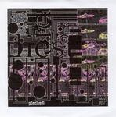

Home Artist links Label link

Matt Martin - Piechest
| Artist: | Matt Martin |
| Title: | Piechest |
| Label: | Paradeco Records pcd-039 |
| Length(s): | 55 minutes |
| Year(s) of release: | 2004 |
| Month of review: | [02/2006] |
Conclusion
Now, don't get me wrong. It's not that Matt doesn't try to introduce some variation, but his rambling guitar sound with lazy, lispy vocals has been tried a little too often already. This combined with the fact that hardly any of the compositions feature something noticeable, such as a striking melody, thus creating a largely style oriented affair, makes the reviewer (being me) less than happy. From this one might conclude that there really isn't a lot to make this album of real interest.
© Roberto Lambooy